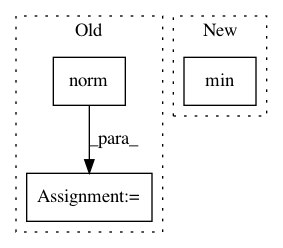

46cb0b5b2cf2d836a2cf96be95d4e25a4004675e,tslearn/clustering.py,KShape,_fit_one_init,#KShape#Any#Any#Any#,729
Before Change
self.cluster_centers_ = initial_centroids.copy()
else:
self.cluster_centers_ = rs.randn(self.n_clusters, sz, d)
self._norms_centroids = numpy.linalg.norm(self.cluster_centers_, axis=(1, 2))
old_inertia = numpy.inf
for it in range(self.max_iter):
old_cluster_centers = self.cluster_centers_.copy()
After Change
def _fit_one_init(self, X, x_squared_norms, rs):
n_ts, _, d = X.shape
sz = min([ts_size(ts) for ts in X])
if hasattr(self.init, "__array__"):
self.cluster_centers_ = self.init.copy()
else:
self.cluster_centers_ = _k_init(X[:, :sz, :].reshape((n_ts, -1)),
In pattern: SUPERPATTERN
Frequency: 3
Non-data size: 3
Instances
Project Name: rtavenar/tslearn
Commit Name: 46cb0b5b2cf2d836a2cf96be95d4e25a4004675e
Time: 2018-10-22
Author: guillaume.androz@gmail.com
File Name: tslearn/clustering.py
Class Name: KShape
Method Name: _fit_one_init
Project Name: geomstats/geomstats
Commit Name: 0ff34ac18a47cdfa9878310b12ff6b5648106bd8
Time: 2020-04-02
Author: 59821822+xpennec@users.noreply.github.com
File Name: geomstats/learning/frechet_mean.py
Class Name:
Method Name: _adaptive_gradient_descent
Project Name: rtavenar/tslearn
Commit Name: 4e5383c92bf8cb6068439780fa91956d1e00df7c
Time: 2020-03-27
Author: francois-33
File Name: tslearn/nonmyopic.py
Class Name: NonMyopicEarlyClassification
Method Name: get_avg_dist